Michigan State University Women in Computing (MSU WIC) is a registered chapter of ACM-W and an organization of students and faculty, both men and women, who work to recruit, support, and retain women in computing-related fields. Our members are a part of a close-knit community on campus that participates in several events throughout the course of the year. Some events we host during the semester include tech talks from visiting companies such as Vertafore, Crowe Horwath, and Target; Lean In Circles; technical workshops; social events; and various outreach activities. Whether you are a student or faculty member or just interested in learning more about us, we would love to see you at our next meeting!

 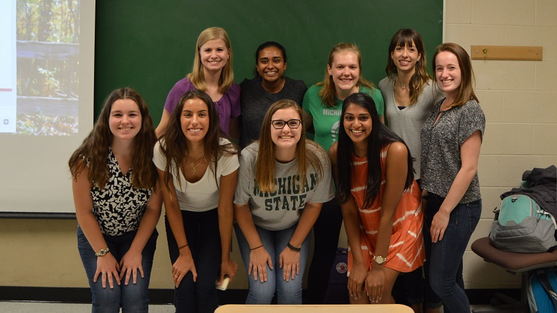
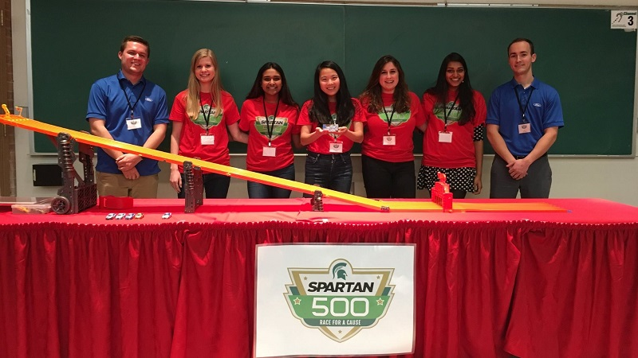
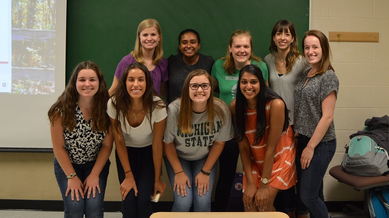
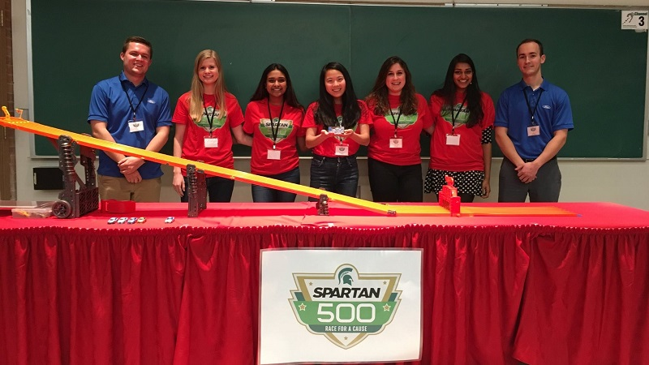
 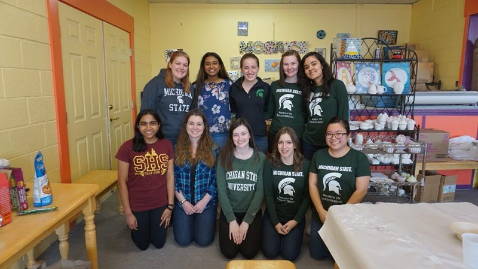
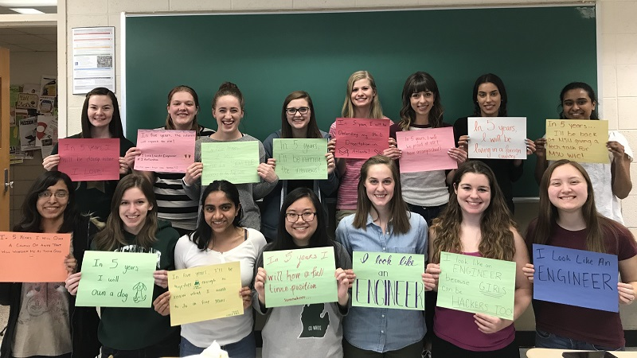
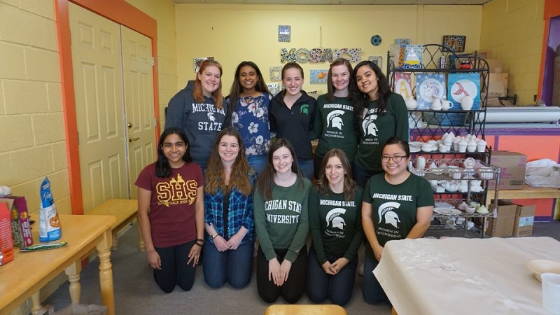
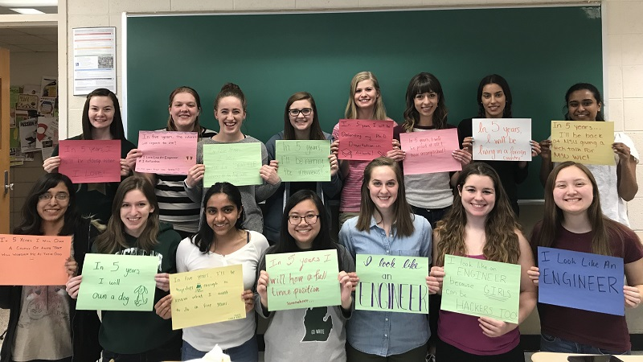
 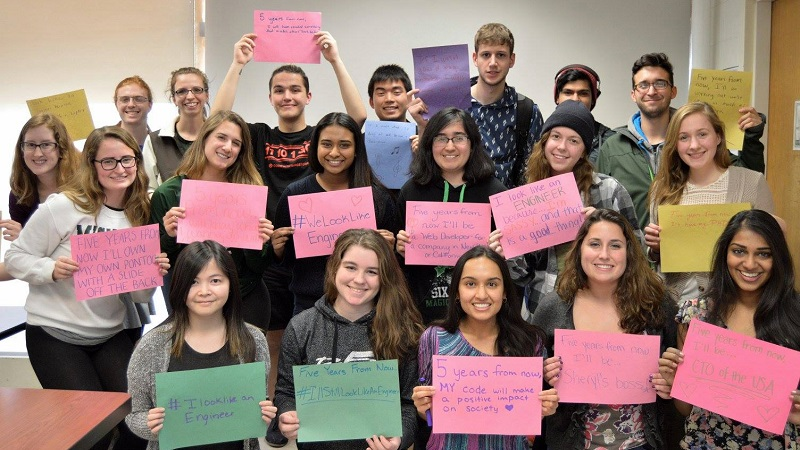
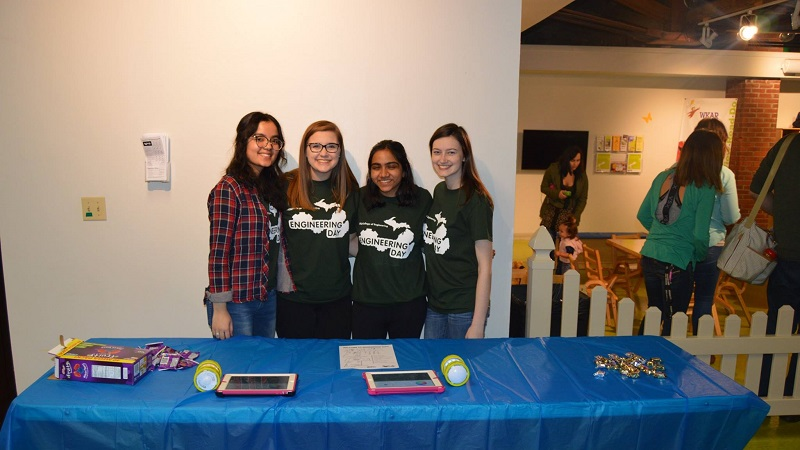
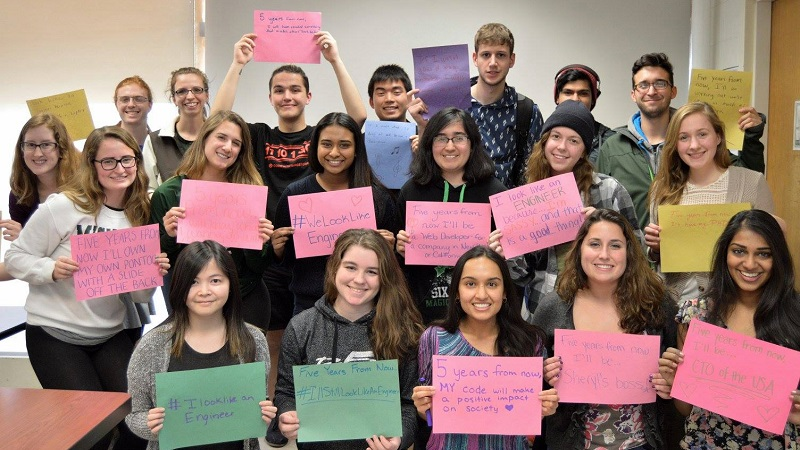
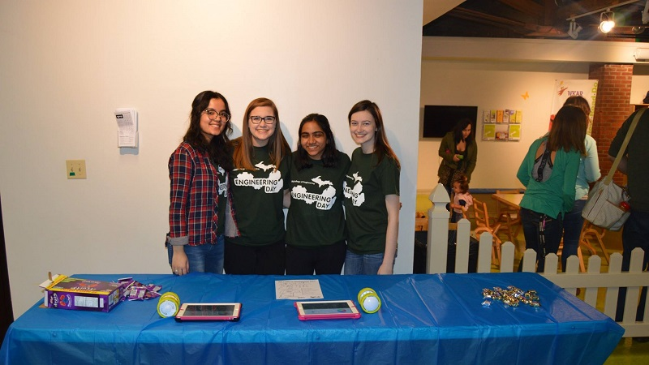


General Meetings
Along with tech talks and Lean In Circles, we also have general meetings, which include self defense workshops, CSE course advice discussions, and more.
Lean In Circles
Lean In Circles are sessions in which our members discuss their careers and help each other with professional and personal development.
Tech Talks
We host a variety of tech talks throughout the year with visiting companies such as Vertafore, Crowe Horwath, Target, and more. Stay tuned for details about this year's talks!
Please contact us to present a Tech Talk!
WIC members participate in a variety of K-12 outreach events at MSU and in the Lansing area. These include STEM nights, career days, Introduce a Girl to Engineering Day, IgniteCS, Girls Who Code, and more.
Please contact us for more details on how to get involved!
Every fall, MSUWIC members have the opportunity to attend the Grace Hopper Celebration, the world's largest gathering of women technologists. Our members attend sessions, presentations, and other fun events during the three-day conference. Sponsorship applications typically open in the spring.
Please contact us for more information!

Social Events
Throughout the year, we host social events, such as ice skating at Munn Ice Arena and trips to Uncle John's Cider Mill, to get to know each other and have fun together! Stay tuned for more details about these events!